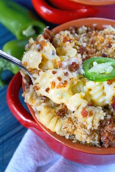
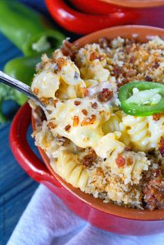

BACON JALEPEÑO MAC AND CHEESE
 

This Bacon Jalepeño Mac n Cheese has just the right amount of heat to make it an exciting treat on game day or a meal that is pure comfort food just for you or for a family dinner. Add a lovely fresh salad to compliment the heat.